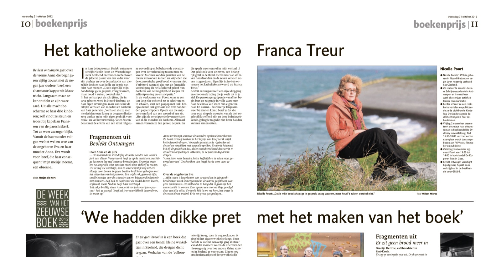

‘Bevlekt ontvangen’ gaat over de vrome Anna die begin jaren vijftig trouwt met de negen jaar oudere Jozef, een charmante kapper uit Maastricht. Langzaam maar zeker ontdekt ze zijn ware aard. Uit alle macht beschermt ze haar drie kinderen, zelf vindt ze steun en troost bij kapelaan Franssen van de parochiekerk. Tot ze weer zwanger blijkt. Vanuit de baarmoeder volgen we het wel en wee van de ongeboren Eva en haar moeder Anna. Eva wordt voor Jozef, die haar consequent ‘mijn meisje’ noemt, een obsessie…

In haar debuutroman ‘Bevlekt ontvangen’ schrijft Nicolle Poort sterk beeldend en zonder oordeel over de jaloerse passie van een vader voor zijn dochter en over de zoektocht van diezelfde dochter naar liefde en begrip van juist haar moeder. “Dat is eigenlijk mijn boodschap: Ga in gesprek, vraag waarom, maar houd ’t zuiver, oordeel niet.”
In het verhaal put de schrijfster, die in 1959 geboren werd in Noord-Brabant, uit haar eigen ervaringen, maar vooral uit de talrijke verhalen van moeders en dochters van haar generatie. “Verhalen die zij met me deelden toen ik nog in de gezondheidszorg werkte en in mijn eigen praktijk voor rouw- en verliesverwerking. Velen waren belast met de erfenis van ‘n strikt religieuze opvoeding en bijbehorende opvattingen over de verhouding tussen man en vrouw. Mannen konden genieten van de nieuw verworven kansen en vrijheden die de economische groei bood, vrouwen niet. Verbitterd zagen zij dat met de financiële vooruitgang en het afkalvend geloof hun dochters wél de mogelijkheid kregen tot zelfontplooiing en emancipatie.”
In de werkkamer van Nicolle, waar ze een jaar lang elke ochtend zat te schrijven en te schaven, staat een paspop met jurk. Een opvallende jurk gemaakt van, wat zal het zijn?, vele honderden papiersnippers. Op elk van die snippers een flard van een woord of een zin. “Het zijn de versnipperde levensverhalen van al die moeders en dochters. Allemaal samen vormen ze één geheel, de jurk. En die speelt weer een rol in míjn verhaal…! Maar ook de zeven, ‘n belangrijk getal in de bijbel. Denk maar aan de zeven hoofdzonden en de zeven vette en zeven magere jaren. Eigenlijk is ‘Bevlekt ontvangen’ het katholieke antwoord op Franca Treur,” concludeert Nicolle.
‘Bevlekt ontvangen’ heeft een rijke diepgang en emotionele lading die je voelt tot in je ziel. De personages grijpen je vanaf het begin beet en zuigen je in volle vaart mee naar de climax van ieder hún eigen verhaal. En daarna… wanneer je langzaam weer bij zinnen komt, besef je dat die twee o zo simpele woorden van de titel ongelofelijk treffend zijn en ze deze indrukwekkende, gelaagde tragedie niet beter hadden kunnen samenvatten.
Fragmenten uit Bevlekt ontvangen:
Over Anna en de jurk – …De naaimachine stikt driftig de witte panden van Anna’s jurk aan elkaar. Vorige week heeft ze op de markt een prachtige katoenen lap stof weten te bemachtigen. Ze geniet ervan om na lange tijd weer eens iets moois voor zichzelf te maken. Uit de stof die overblijft, kan ze waarschijnlijk nog net een bloesje voor Emma knippen. Nadine heeft haar geholpen met het uitzoeken van het patroon. Een wijde rok, gesmokt lijfje, smalle bandjes over de schouders en een bijpassend bolerootje met mouwen. Zelf had ze nooit voor dit model durven kiezen, te frivool, maar Nadine heeft haar overtuigd.
‘Hij zal je beeldig staan Anna, echt een jurk voor jouw postuur’ had ze gezegd. ‘Jozef zal je vrouwelijkheid bewonderen, let maar op.’
Anna verkrampt wanneer de woorden opnieuw bovenkomen. Ze hoort zichzelf denken: in het bijzijn van Jozef zal ik altijd het bolerootje dragen. Voorzichtig trekt ze de rijgdraden uit de stof en verwijdert met zorg alle spelden. Ze wordt helemaal blij bij de gedachten dat, als ze vanochtend hard doorwerkt en de weersvoorspellingen uitkomen, ze de jurk zondag al kan dragen.
‘Anna, kom naar beneden, het is koffietijd en de salon moet geveegd worden.’ Geschrokken van Jozefs harde stem veert ze op…
Over de ongeboren Eva – …Mijn cocon is losgekomen van de wand en in ijzingwekkende vaart word ik meegevoerd in de warme golfstroom. Nergens een houvast. De snelheid is zo hoog dat ik geen tijd heb om misselijk te worden. Dan opeens een enorme klap, gevolgd door een kille stilte. Verdoofd kijk ik om me heen, het water in de cocon kleurt troebel. Er is een groot gat geslagen…